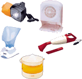

Success & Co., is an International Holdings Ltd. is a leading manufacturer of household electrical appliances, auto accessories, health care products, fluorescent products and security alarms. The Group presently manufactures over 300 models of electrical appliances including toasters, coffee makers, blenders/choppers, hand mixers, electric irons, electric knives, water boilers, hair dryers and vacuum cleaners. Major markets include Western Europe and Asia.
The Group products are sold under retailers' private labels or under one of Success five established brand names; Home Electric, Stylistic, Antec, Anex and Health-Tec. In addition to the ODM (original design manufacturer) product range, Anex also provides outstanding service to a lot of OEM (original equipment manufacturer) projects and enjoys success over the years with quality buyers all over the world. Success & Co., is the principal operating subsidiary of Success International Holdings Ltd. engaging in the design, sales, marketing and manufacture of a comprehensive range of domestic electrical appliances. It was established in 1985 in Madras.
The Group products include :
| Household electrical appliances: | Over 100 models of coffee makers/percolators, toasters, appliances fruit juicers, blenders/choppers, hand mixers, electric knives, electric irons, table grills and raclettes, grills ovens, water boilers, vacuum cleaners, security alarms and safety devices. | |
| Auto Accessories: | Over 50 models of car vacuum cleaners, fans, air pumps and polishers. | |
| Beauty care products: | Over 60 models of hair dryers, curlers, infra-red massager, foot-baths/massagers, facial sauna and cleansers. | |
| Florescent products: | Over 50 models of car lights and lamps and multi- function torches and lanterns. | |
| Security alarms: | Over 10 models of personal alarms and sensor lights. |
The market for the Group's products can be characterized as steady and predictable, especially as the Group has a diverse geographical spread of markets. Goods manufactured by the Group are distributed widely to over 600 active accounts in over 100 countries. Europe has been the Group's biggest market and has been steady over the years. The Group has a strong research and development team comprising 80 personnel. The production process is highly integrated and involve tooling, plastic injection moulding, die-stamping, parts assembly, ultra-sonic welding of products, pad-printing, functional testing and quality inspection and packaging.Plastic resins, sheet metal and electric motors are the major raw materials and components used by the Group in production. The Group sources raw materials and components from over 300 suppliers mainly based in Hong Kong, and also in Taiwan, Korea, the United States, Europe and Japan.